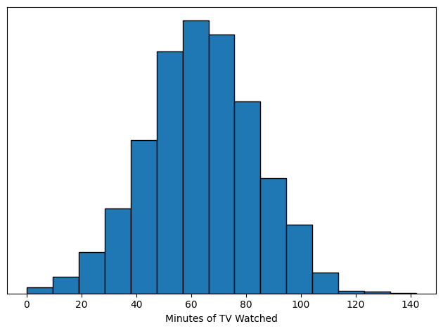
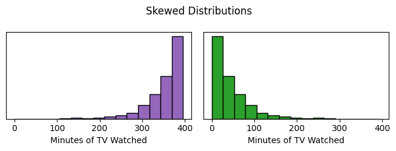
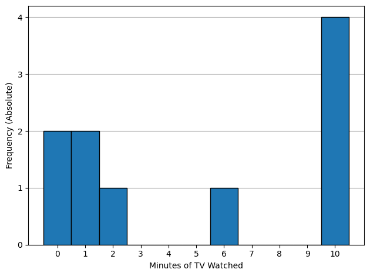
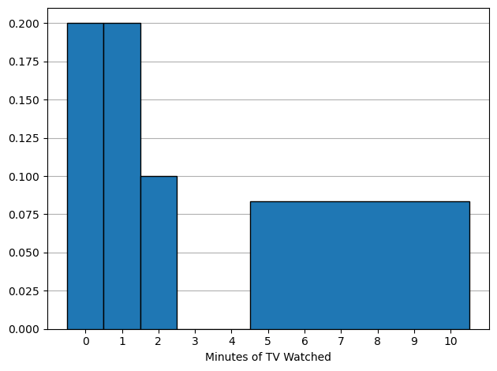
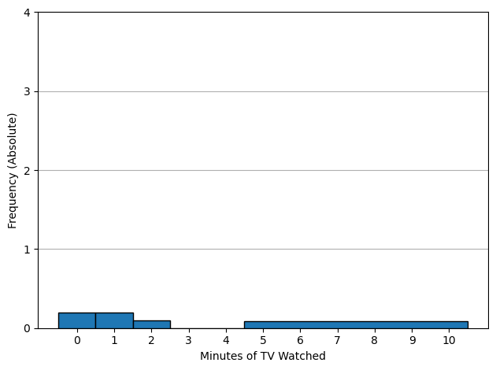
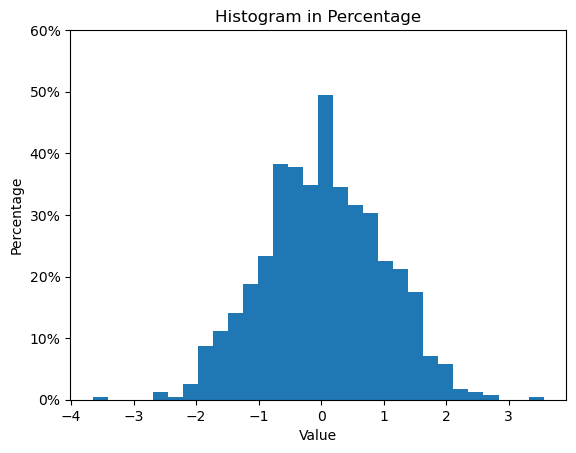

import numpy as np
import matplotlib.pyplot as plt
np.random.seed(1)
def clean(filename='', ax=None, yticks=None, ylabel=None):
if ax is None:
ax = plt.gca()
if ylabel is None:
ax.set_ylabel("Frequency (Absolute)")
ax.set_xlabel("Minutes of TV Watched")
#ax.set_title("")
if yticks is not None:
ax.set_yticks(yticks)
plt.tight_layout()
if filename:
plt.savefig('images/' + filename.rstrip(".svg")+'.svg',
transparent = True,
format = 'svg',
bbox_inches='tight')
plt.show()
style = {"bins": 15,
"ec": 'black'}
n = 2000
ndata = np.random.normal(size = n)
fig, ax = plt.subplots()
ax.hist( 20 * (ndata - np.min(ndata)), **style)
clean('normal_histogram', yticks = [], ylabel = '')
#ax.set_yticks([])

k = 1.2
fig, axs = plt.subplots(1,2, sharey = True, figsize = (8/k,3/k))
ax = axs[1]
edata = np.random.exponential(size = n, scale = 44)
ax.hist(edata, **style, density = True, color = 'C2')
y_ticks = ax.get_yticks()
ax.set_yticks(y_ticks)
ax.set_yticklabels(['{:.0f}'.format(y*100) for y in y_ticks])
ax.set_xlabel("Minutes of TV Watched")
ax.set_yticks([])
#clean('longright')
# Right panel
ax = axs[0]
ax.hist(-edata + np.max(edata), **style, density = True, color = 'C4')
y_ticks = ax.get_yticks()
ax.set_yticks(y_ticks)
ax.set_yticklabels(['{:.0f}'.format(y*100) for y in y_ticks])
ax.set_xlabel("Minutes of TV Watched")
plt.suptitle("Skewed Distributions")
plt.tight_layout()
plt.savefig("images/skewed_histograms.svg", format = 'svg', transparent = True)
plt.show()

Income#
incomes = 0, 10, 10, 20, 20, 20, 30, 216
fig, axs = plt.subplots(3,1, sharex = False,
figsize = (6,4.5))
sty = {"ec": 'black',
"zorder": 10}
ax = axs[0]
b = -0.5, 0.5, 9.5, 10.5, 19.5, 20.5, 29.5, 30.5, 215.5, 216.6
ax.hist(incomes, **sty,
density = True,
bins = b)
ax = axs[1]
b = -e, 10+e, 20 + e, 30+e, 216-5, 216+5
b = -5, 5, 15, 25, 35, 216-5, 216+5
ax.hist(incomes, **sty,
density = True,
bins = b)
ax = axs[2]
b = -e, 10+e, 20 + e, 30+e, 216+5
b = -5, 5, 15, 25, 35, 216+5
ax.hist(incomes, **sty,
density = True,
bins = b)
# yticks
axs[0].set_ylim(0, .425)
axs[0].set_yticks([0, .125, .25, .375])
axs[1].set_ylim(0, .0425)
axs[1].set_yticks([0, .0125, .025, .0375])
axs[2].set_ylim(0, .0425)
axs[2].set_yticks([0, .0125, .025, .0375])
axs[2].set_xlabel("Income ($)")
#axs[3].set_ylim(0, .0425)
#axs[3].set_yticks([0, .0125, .025, .0375])
for ax in axs:
ax.set_xticks( [0,10,20,30,216] )
#ax.set_yticks([0,1,2,3,4,5])
ax.yaxis.grid(True, zorder = -10)
y_ticks = ax.get_yticks()
ax.set_yticks(y_ticks)
ax.set_yticklabels(['{:.2f}'.format(y*100) for y in y_ticks])
axs[0].set_title("Income Histograms")
plt.tight_layout()
plt.savefig("images/income_histograms.svg", format = 'svg', transparent = True)
plt.show()
---------------------------------------------------------------------------
NameError Traceback (most recent call last)
Cell In[7], line 14
9 ax.hist(incomes, **sty,
10 density = True,
11 bins = b)
13 ax = axs[1]
---> 14 b = -e, 10+e, 20 + e, 30+e, 216-5, 216+5
15 b = -5, 5, 15, 25, 35, 216-5, 216+5
16 ax.hist(incomes, **sty,
17 density = True,
18 bins = b)
NameError: name 'e' is not defined
#plt.hist(incomes)
Heights and Crowding#
d = 10,10,10, 30, 50, 70
fig, ax = plt.subplots()
ax.hist(d,
density = True,
ec = 'black')
(array([0.08333333, 0. , 0. , 0.02777778, 0. ,
0. , 0.02777778, 0. , 0. , 0.02777778]),
array([10., 16., 22., 28., 34., 40., 46., 52., 58., 64., 70.]),
<BarContainer object of 10 artists>)
data = 0, 0, 1, 1, 2, 6, 10, 10, 10, 10
b = np.linspace(-0.5, 10.5, 12)
style2 = style.copy()
style2['bins'] = b
fig, ax = plt.subplots()
ax.hist(data,
**style2,
zorder = 10)
ax.set_xticks(range(0,11))
ax.yaxis.grid(True, zorder = -10)
clean(yticks = range(0,5))

len(data)
10
style2 = style.copy()
style2['bins'] = [-0.5, 0.5, 1.5, 2.5, 3.5, 4.5, 10.5]
fig, ax = plt.subplots()
ax.hist(data,
**style2,
zorder = 10,
density = True)
ax.set_xticks(range(0,11))
ax.yaxis.grid(True, zorder = -10)
clean(ylabel = '')

style2 = style.copy()
style2['bins'] = [-0.5, 0.5, 1.5, 2.5, 3.5, 4.5, 10.5]
fig, ax = plt.subplots()
ax.hist(data,
**style2,
zorder = 10,
density = True)
ax.set_xticks(range(0,11))
ax.yaxis.grid(True, zorder = -10)
clean(yticks = range(0,5))

import matplotlib.pyplot as plt
import numpy as np
# Sample data
data = np.random.normal(0, 1, 1000)
# Create histogram with density=True
plt.hist(data, bins=30, density=True)
# Get current y-ticks
y_ticks = plt.gca().get_yticks()
# Set new y-ticks (convert density to percentage)
plt.gca().set_yticks(y_ticks)
plt.gca().set_yticklabels(['{:.0f}%'.format(y*100) for y in y_ticks])
# Set labels and title
plt.xlabel('Value')
plt.ylabel('Percentage')
plt.title('Histogram in Percentage')
plt.show()

Controlling for Variables#
Recall a confounder is a variable that can distort the comparion of two groups. In an observational study, it’s a good idea to compare the distributions for confounders between your treatment and control group.
When a potential confounder is quantitative, this can be done by overlaying the histograms.
{kind=link}
d = np.random.normal(size = 100)
fig, ax = plt.subplots()
ax.hist(d,
color = 'C0',
histtype = 'step',
ls = 'dotted',
lw = 3,
density = True)
ax.hist(d + .3,
color = 'C1',
histtype = 'step',
ls = 'dashed',
lw = 3,
density = True)
(array([0.01981578, 0.09907891, 0.15852626, 0.27742096, 0.25760518,
0.49539457, 0.31705253, 0.15852626, 0.15852626, 0.03963157]),
array([-2.40833931, -1.90369107, -1.39904284, -0.8943946 , -0.38974636,
0.11490188, 0.61955012, 1.12419836, 1.6288466 , 2.13349484,
2.63814308]),
[<matplotlib.patches.Polygon at 0x1221d9750>])
Exercies#
d = 1, 2, 3, 4
fig, ax = plt.subplots()
ax.hist(d,
ec = 'black',
fc = 'C0',
density = True,
bins = (1,5),
zorder = 10)
ax.set_xlim(0,6)
#ax.set_yticks([])
ax.yaxis.grid(True, zorder = -10)
yticks = ax.get_yticks()
ax.set_yticklabels(range(0,26, 5))
ax.set_xlabel("# Houses Owned")
plt.tight_layout()
plt.savefig("images/oneblockhist.svg", format = 'svg', transparent = True)
plt.show()
/tmp/ipykernel_7558/239119586.py:16: UserWarning: FixedFormatter should only be used together with FixedLocator
ax.set_yticklabels(range(0,26, 5))